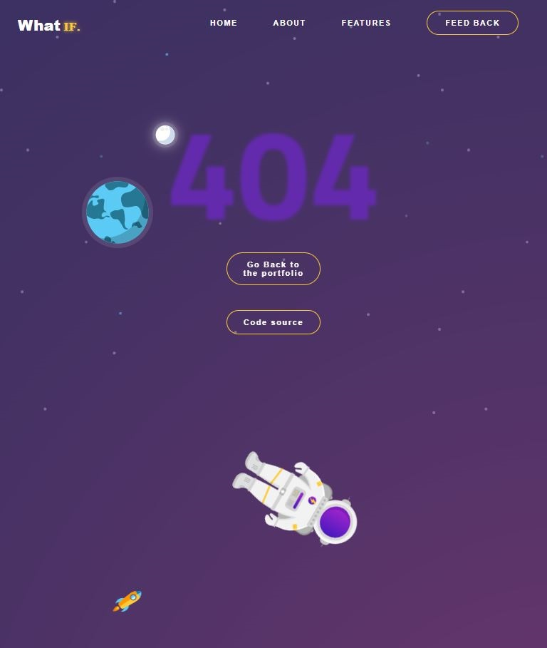
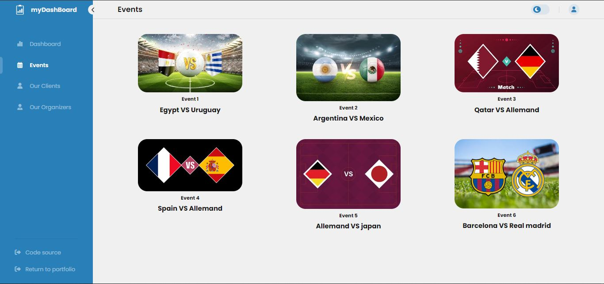
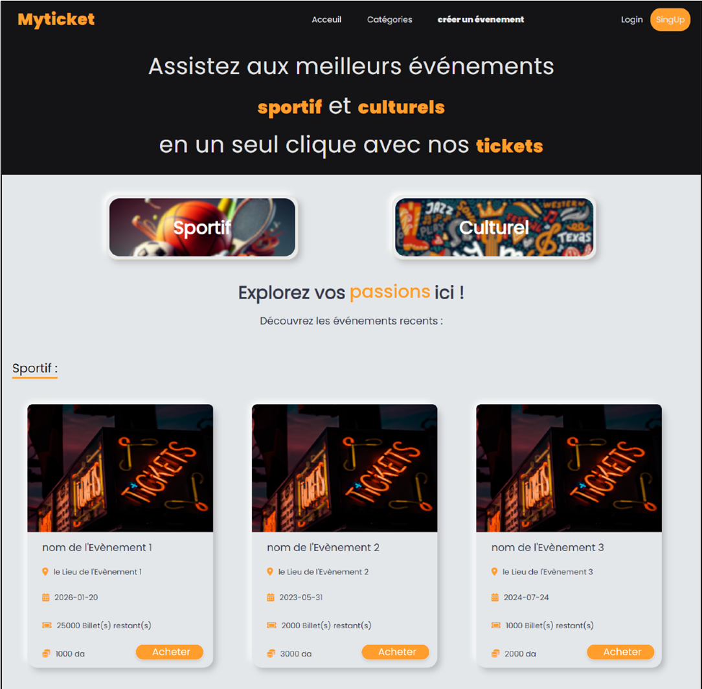
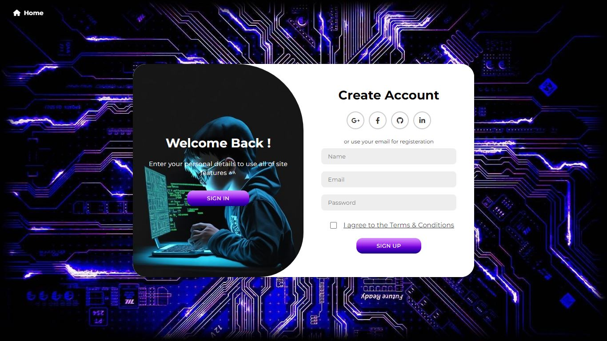

My Projects

ERROR-404
An elegantly crafted 404 error page using HTML, CSS, and JavaScript, ensuring that lost visitors can easily find their way back to the main site. The design features smooth animations and interactive elements that provide a user-friendly experience while maintaining a professional appearance.

DashBoard
A sophisticated and fully responsive dashboard created with HTML, CSS, JavaScript, and Bootstrap. This project includes interactive charts, user analytics, and customizable widgets, providing a seamless experience for managing and visualizing data. It features a modern interface with intuitive navigation, making data management both efficient and visually appealing

MyTicket
An advanced ticketing system developed using HTML, CSS, JavaScript, PHP, and MySQL. This project enables users to create, manage, and track support tickets with ease. It includes user authentication, ticket categorization, and real-time updates, offering a robust solution for customer support and issue tracking. The design is user-centric, ensuring that both users and administrators can navigate and operate the system effortlessly.

SignIn | Signup page
A sleek and intuitive SignIn and signup page built with HTML, CSS, and JavaScript. This project features smooth transitions between login and registration forms, enhancing user experience. The form validation is handled by JavaScript, ensuring that user inputs are correct before submission. The design prioritizes ease of use and accessibility, providing a seamless entry point for users.
Neural Networks
An innovative neural network model developed for an academic project, which received a commendable grade of 17/20. This project showcases the application of cutting-edge machine learning techniques to classify and predict complex data patterns. The model is designed to be robust and efficient, highlighting a deep understanding of artificial intelligence and its practical implementations. This project not only demonstrates technical expertise but also a commitment to academic excellence.